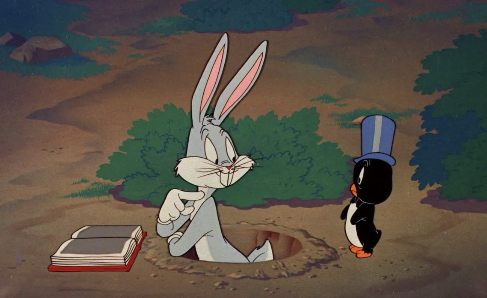

Bugs Bunny
Bugs Bunny, Warner Bros. tarafından yaratılan ve 1940'lı yıllarda yayınlanan popüler bir çizgi film karakteridir. Bugs Bunny, zeki ve şakacı bir tavşan karakteri olup, birçok çizgi filmde ana karakter olarak yer alır.
Bugs Bunny, kahramanlık ve cesaret temalarını içeren birçok çizgi filmde yer alır. Çizgi filmlerinde, Bugs Bunny'nin zekâsı ve cesaretiyle ilgili hikayeler anlatılır.
Bu sevilen yapımı sizler de çocuklarınıza izletebilirsiniz.